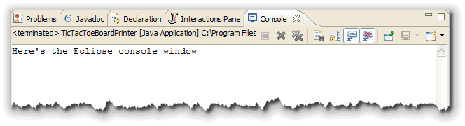
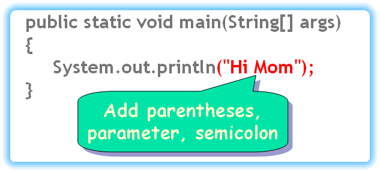

In the Java Syntax lesson, you learned about the basic structure of a method; that it consists of a header and a body, and that the body contains statements that carry out actions. In this lesson, you'll take a closer look at the statements that go inside a method body.
We'll start by looking at the most common type of statement,
the output statement. Then, we'll take a closer look at
the String class and the PrintStream
class which is used for output in traditional console
programs.
ACM Console Output
Today, the GUI (Graphical User Interface) has almost completely supplanted traditional console I/O for communicating with the user. Instead of reading and writing lines of text on the console, most Java programs use labels, buttons, text fields and drop-down menus.
The traditional console hasn't entirely disappeared from Java; however, it's just taken on a somewhat different flavor. The ACM Program classes have two methods for sending output to the console:
void print(any-type parameter)
void println(any-type parameter)
Printing Methods
These two methods work a little like the Write
and Writeln procedures in Pascal, or the
Print statement in BASIC. To use
either print() or println(),
pass the method a single parameter, which can be of
(almost) any kind or type. The parameter (or argument)
that you pass is converted to a "human-readable" text format,
called a String, and then displayed on the program's
console window.
Here's and example that uses both print()
and println():
print("I am ");
print(59);
println(" years old.");
The difference between print() and println(),
is that println() adds a newline to the
end of its output, so that the next time you use
print() or println(), the new output
appears at the beginning of the following line.
You can also call
println() with no arguments, if you just want to
add a "blank" line on the console.
Java's Output Objects
The print() and println() are part of
the ACM Program class. You can use these methods because
the have been defined by the programmers who wrote that class.
For "traditional" console programs, though, like those in your
textbook, you'll need to use the built-in Java output object,
System.out, instead.
The Java class libraries have three predefined objects that manage traditional console I/O:
- System.out: the standard console output object
- System.err: the standard console error output object
- System.in: the standard console input object
The two standard ouput objects—System.out
and System.err—are members of the
PrintStream class. The objects in the PrintStream
class know how to send output to a device that can display
that output so you can see it.
The System Console Window
When you use the standard console objects, instead of using a graphical console window that can be embedded inside an applet, like the ACM programs do, both input an output appear inside your operating system's console window, or the window that your IDE uses for console input and output.
Your operating system's console is the command shell or terminal window that you used to start the program from the command line. In Eclipse, normal operating system input and ouput appears in a special console window that looks like this:

If you want to use the standard system console in your ACM programs, just extend Program instead of ConsoleProgram.
Sending Messages
You communicate with objects, like System.out
by sending them messages, which, as you saw in the previous
lesson, is simply another way of saying calling (or invoking) a
method. Because we are calling a method in a different
object, though, the syntax is a little different.
To see how this works, we'll examine a hypothetical program,
named HiMom, that's similar to one of the simple programs,
HelloPrinter, from the first chapter of your textbook.
We'll look inside the HiMom program and see how it sends the
println() message to the PrintStream object
named out, which is automatically created when your
program starts.
Like HelloPrinter, the HiMom class only has a single method,
main(), and, since actions can only occur inside a method,
we'll have to send our message inside the
main() method.
Whether you use main() or run(), inside
your program's "start-up" method, you'll write
different kinds of statements. You can write statements to
display text. You can also create graphical programs that
display lines, shapes, and even images. For right now, though,
we'll start with simple text output, similar to that in
HelloPrinter.java.
Who? (The Receiver)
When your program first starts up, the Java Virtual Machine that
loads your program automatically loads a group of
classes, (called the java.lang package). This package
includes classes that you'll commonly use in every program,
with names like String and System.
Once it's loaded, the System class automatically
creates several objects that you can use for input and output.
One of these objects, which can be used to print information
on the console window, is named out. Because
this object is inside the System class,
we have include the class name when we refer to it as
System.out.
Even though the out object is physically stored
inside the System class, it actually is an instance
of a different class, the class named PrintStream. Later
on in this lesson you'll learn more about the PrintStream
class and what it can do. For right now, just notice that you have
an object, System.out, that you can send messages to.
When you send a message to an object, that object is called the
receiver of the message. Whenever you send a message,
you start by specifying the receiver, like this:
 Always start by asking "what object is going to carry out
the action?"
Always start by asking "what object is going to carry out
the action?"
What? (The Request)
After you've specified the receiver of the message, you have
to tell the object what you want it to do. You do that
by using the name of the method, (this is called the
request), followed by parentheses.
 Separate the message name from the receiver with a dot (.),
just like we used the dot to separate the class name from
the object name.
Separate the message name from the receiver with a dot (.),
just like we used the dot to separate the class name from
the object name.
To find out what messages you can send to an object, you'll
have to look up the JavaDoc documentation online,
or use the abbreviated version in the back of your textbook.
You'll learn how to use the online JavaDocs in a leter lesson.
For right now, here is the documentation for the PrintStream
println() method.

Parameter
When you send a message to an object, the object may require additional information before it can carry out your request. This additional information is specified in the Java documentation as the method's parameter(s) or argument(s).
If you look back at the documentation for the println()
method, you'll see that it requires a single String
parameter. We haven't yet formally met the String
class yet. For right now, think of a String as
"text between double-quotes".
Simply change your code like this, and everything will compile and work as expected. (Don't forget the closing quotes, and the semicolon as well).

In addition to text parameters, methods often require you to pass
numbers as well. If the documentation for a parameter uses
the word int, then you need to supply a plain
whole number, without quotes or a decimal point,
like this: 123. If the documentation for a parameter uses
the word double, then you can use a whole number,
(like you did for int), but you can also supply a
number that has a decimal point, like this:123.75.
One More Import Statement
Using the built-in println() method in your ACM programs
is a little easier than using System.out.println()
if for no other reason than that it requires much less typing. You
can reduce that extra typing considerably by adding a static
import to the top of your class, along with the other imports.
If you add this line:
import static java.lang.System.out;
then you can write out.println() instead of
System.out.println(). If you have only a single line
that's not a great savings, but it does add up when the print
statements multiply.
The String Class
In Java, there are two types that represents human-readable text:
the char type, for individual characters, and the
String class for phrases, sentences, and paragraphs.
We'll talk more about the char type later in the
course. We'll also put off many of the details of the String
class such as those covered in Chapter 4 of your textbook until
next week. Because we'll been making so much use of the strings in these
first few chapters, though we'll cover the basics here.
A string is a sequence of characters, like those
in this sentence. In Java, the sequence can include any number
of characters, including 0. Unlike some other programming languages,
Java's strings are immutable. This just means that a
String object, once created, can never be
changed; it will always be composed of exactly the same
sequence of characters.
String Literals
String literals are formed using regular
characters, enclosed in double quotes, like the parameter passed
to the println() method in the HelloPrinter
program from Chapter 1:
System.out.println("Hello, World!");
String Concatenation
When used with Strings, the plus sign (+) acts to
"paste" two Strings together to form a new
String, a process called concatenation.
This can be useful when you want to print a very long
String that won't fit inside the code window
without scrolling, like this example, (which won't compile as it is):
println("The only stupid question is
the one that's not asked.");
To get this to work, you just create two String
literals, and combine them into one with the concatenation
operator like this:
println("The only stupid question is " +
"the one that's not asked.");
When you do this, make sure that you leave a space character separating the words when they're recombined.
Numbers and Concatenation
You can also use the plus-sign to "paste together" numbers
and String values. When you do this, Java
automatically converts the number type to a String
so that the number can be displayed.
Here's an example that combines a number (my age) with a
pair of String literals:
println("I am " + 59 + " years old.");
Note that the number does not have quotes around it. Sometimes, this automatic conversion interferes with what you really want to do, however. If you were to write this:
println("I am " + 25 + 34 + " years old.");
you might expect to see my age printed out as before. Instead, however, you'll see "I am 2534 years old" printed on your display, which is really not correct, no matter how gray my hair.
When you use the plus-sign in this way, you'll need to use
parenthesis to let Java know you want to add the two
numbers, while concatenating the Strings,
like this:
println("I am " + (25 + 31) + " years old.");
Escape Sequences
Suppose that you want to put quotes-marks around this quotation from Abraham Lincoln. You might try this:
println(""Whatever you are, be a good one."");
Unfortunately, this won't compile, because Java treats the first quote that appears inside your string as the end of the string itself. Java has a solution.
An escape sequence is a method of writing "difficult"
characters, that is, characters that are invisible or that
are used, normally to delimit other characters.
The first part of an escape sequence is to designate one
character as the "escape character". When that character
is encountered—in a character literal or in a group of
characters, called a String—the compiler treats
it as a flag that means:
"Look out! The next character is special."
In Java, the escape character is the backslash. Whenever a backslash appears in a character constant, the following character is set aside for special treatment.
Java maintains "special notation" for several of the common control characters, as escape sequences. These include:
| \n | The newline character (Unicode 10) |
|---|---|
| \r | The carriage-return (ENTER) (Unicode 13) |
| \t | The horizontal tab character (Unicode 9) |
| \f | The form-feed character (Unicode 12) |
| \b | The backspace character (Unicode 8) |
| \' | The single quote |
| \" | The double quote |
| \\ | The backslash itself |
With this information, you can see that you could write your Lincoln quote like this:
println("\"Whatever you are, be a good one.\"");
Coming Up...
Now that you've been introduced to output, the System.out objects and the String class, let's turn our attention to the processing part of the the Input-Processing-Output process.
We'll start by defining objects that can hold values, called variables.